Building navigation
for your doc site
5 best practices
Created by Tom Johnson / @tomjohnson
idratherbewriting.com
Write the Docs Portland 2017
May 15, 2017
Keyboard Shortcuts
| Next slide | Space bar |
| Full screen | F |
| Index | Esc |
Note: Slides can also move down, such as when I'm exploring a design principle in depth.
If so, the arrow on the lower-right indicates the vertical direction. Test it out now.
First realizations of a problem
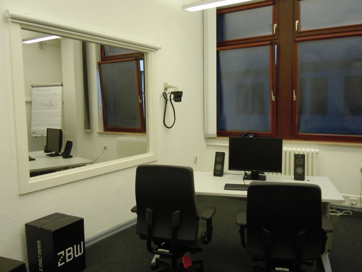New company ... same problem
How do you increase the user's ability to find answers in docs?
Design principles to tackle the problem

- Hierarchy
- Progressive Disclosure
- Immersion
- Desire Line
- Modularity
- Wayfinding
Action 1: Group topics in product sidebars
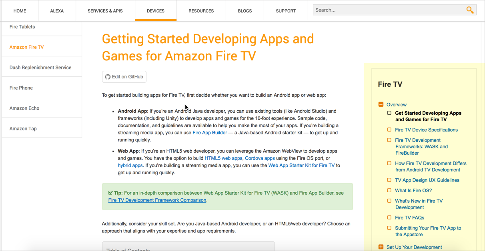Design principle: Hierarchy
"Hierarchical organization is the simplest structure for visualizing and understanding complexity."
— Universal Principles of Design
Hierarchy example: Google

Hierarchies break down complexity
Hierarchies give idea of "whole"
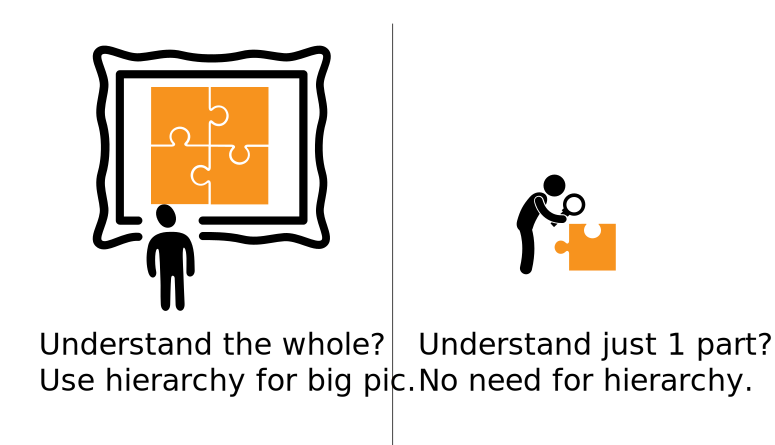Deep hierarchies don't relay "whole"
Hierarchies show what's in the neighborhood
Action 2: Navigate from doc set to doc set
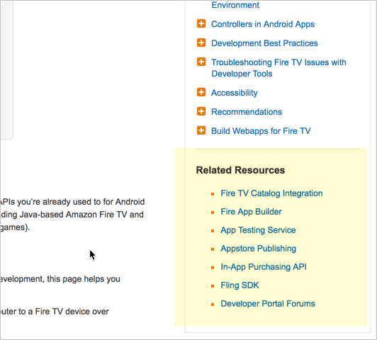Design principle: Progressive disclosure
"A strategy for managing information complexity in which only necessary or requested information is displayed at any given time."
— Universal Principles of DesignLayer information at different levels
Doc home example: Azure

Doc home example: AWS
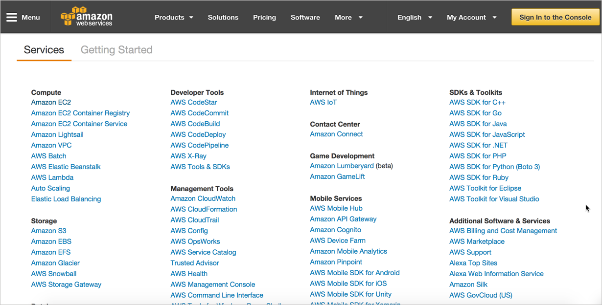Prod. home example: Harvest

Action 3: Allow navigation within content
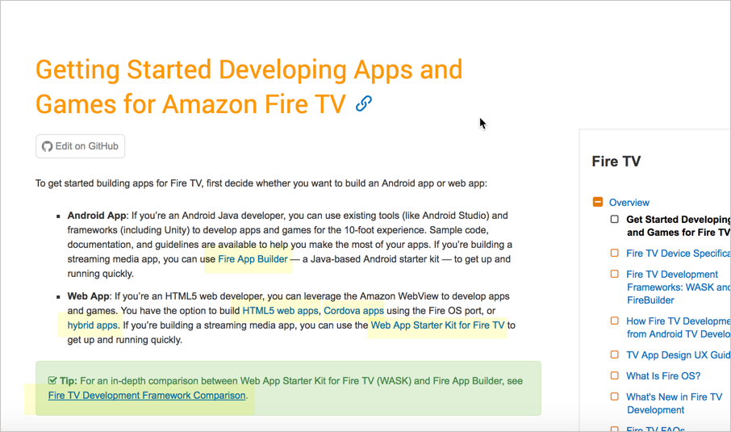Design principle: Immersion
"A state of mental focus so intense that awareness of the 'real' world is lost, generally resulting a feeling of joy and satisfaction."
— Universal Principles of Design
Even in help, users want to stay inline
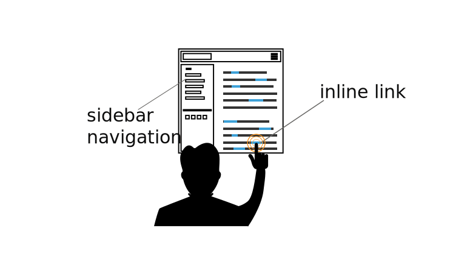Bottom-up navigation
— Mark Baker
- If you tell me I can do something, link to how to do that something.
- If you tell me I can use something, link to a description of that something.
- If you mention a concept or an idea, link to a description of that concept or idea.
Immersion example: Wikipedia
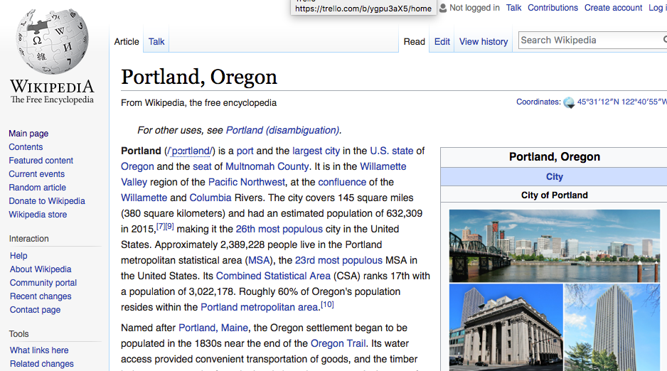Action 4: Make popular topics easy to access
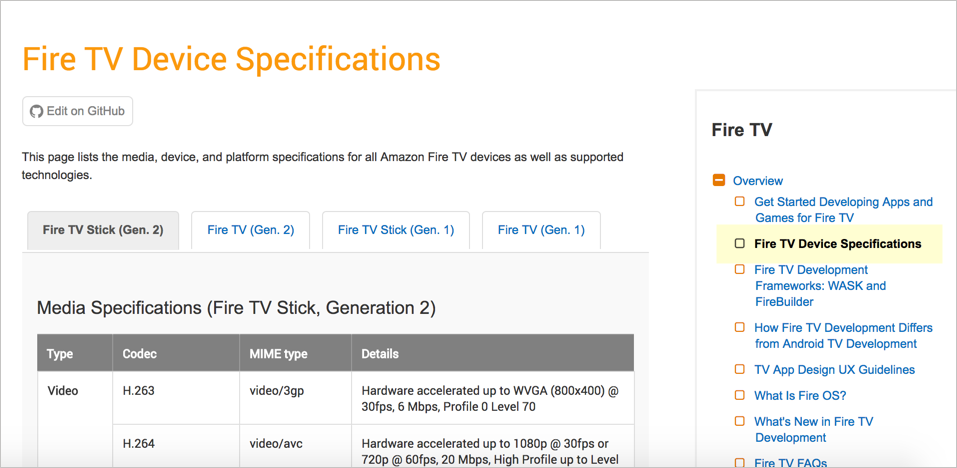Design principle: Desire Line 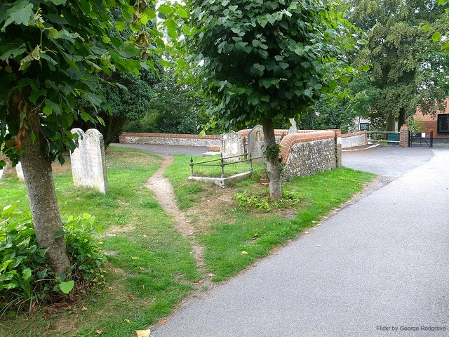
"Traces of use or wear that indicate preferred methods of interaction with an object or environment." — Universal Principles of Design
Desire line example: Twitter
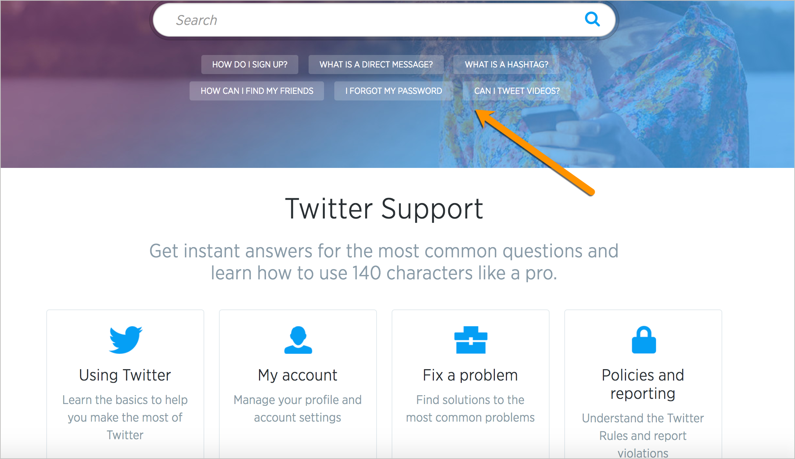Action 5: Reduce information fragmentation
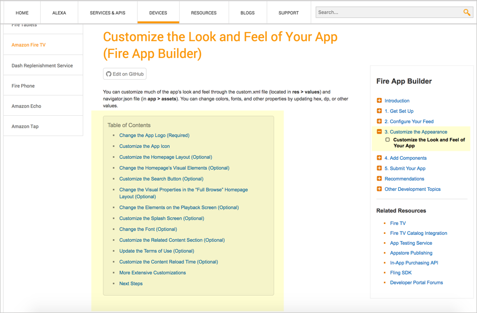Design principle: Modularity
"A method of managing system complexity that involves dividing large systems into multiple, smaller self-contained systems."
— Universal Principles of Design
Users read non-sequentially
You can just read the sections about the tasks you want to do.— John Carroll, The Nurnberg Funnel
Create self-contained "articles"
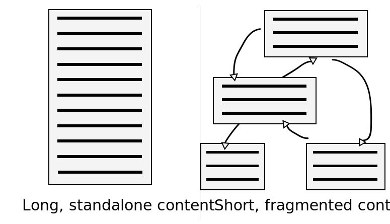Building blocks ≠ presentation

Action 6: Hang signposts along the way

Design principle: Wayfinding
"The process of using spatial and environmental information to navigate to a destination."
— Universal Principles of Design
Provide context before
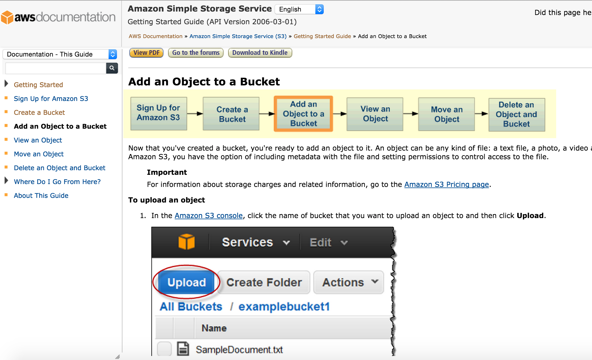Provide context after
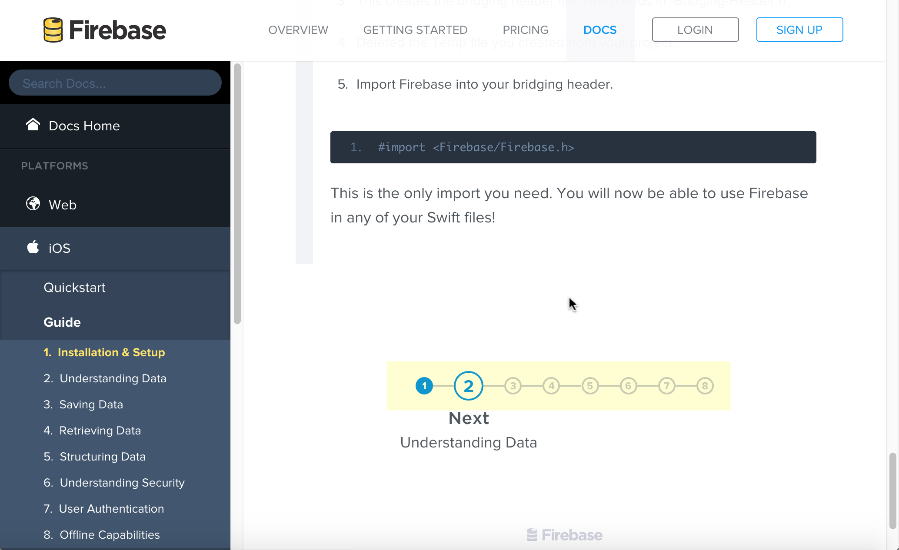Breadcrumbs (Facebook)

Discussion Question
With your own documentation in mind, how are you incorporating some of the following design principles?
- Hierarchy
- Progressive Disclosure
- Immersion
- Desire Line
- Modularity
- Wayfinding
Thanks!

Tom Johnson
— idratherbewriting.com
— @tomjohnson
— tomjoht@gmail.com